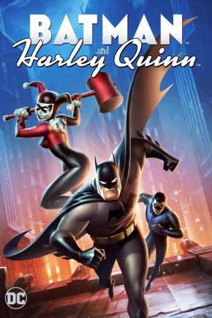

#6837 Batman und Harley Quinn
 
 IMDB-Wertung: 5.9 / 10
IMDB-Wertung: 5.9 / 10  Metascore: 0
Metascore: 0 
Batman und Nightwing verbrüdern sich mich der ehemaligen Geliebten des Jokers, Harley Quinn. Ihr Ziel ist es, gemeinsam Poison Ivy und Jason Woodrue zu stoppen um eine globale Katastrophe zu verhindern. Denn die beiden versuchen die Weltherrschaft an sich zu reißen...
Jahr: 2017
Dauer: 74 Minuten
FSK: 12
Land: USA Studio: Warner Bros. Home EntertainmentTonspuren: DD5.1 - ,
Untertitel: Deutsch,
Auflösung: 1080p (1920x1080) Größe: 2488 MB
Genre: Action, Sci-Fi, Komödie, Abenteuer, Fantasy, Animation/Trick
Regisseur: Sam Liu
Drehbuch: Bill Borden
Soundtrack:
Darsteller:
Datei: X:\Comic-Trick\Batman\Batman und Harley Quinn (2017, FSK12, 1920x1080).mkv seit 30.08.2017
Festplatte: Comicverfilmungen+MusikCD
 Es gibt insgesamt 19 Filme in der Gruppe 'Comic-Trick\Batman'
Es gibt insgesamt 19 Filme in der Gruppe 'Comic-Trick\Batman'